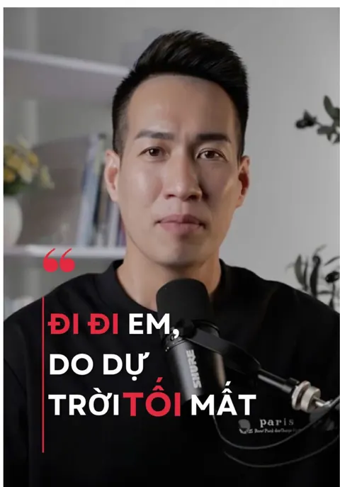

TikTok trọn gói cho spa, F&B và phòng khám
Deeplab Media nhận làm TikTok trọn gói theo tháng: viết kịch bản từ chính dịch vụ của bạn, quay tại cơ sở, dựng và lên lịch đăng 3–7 video mỗi tuần. Nhân viên của bạn là gương mặt của kênh, ê‑kíp hướng dẫn ngay tại buổi quay. Báo giá theo phạm vi, gửi trong 24 giờ.

01Vấn đề chúng tôi thường nghe
Khách hàng nói“Mở kênh cả năm mà chỉ đăng được vài video. Nhân viên ngại lên hình, thuê người quay thì không biết giao việc gì.”
Chủ spa, F&B và phòng khám thường không thiếu tiền làm TikTok mà thiếu sự yên tâm: thuê rồi có ra video đều không, nhân viên có chịu lên hình không, tiền bỏ ra có ai xem không.
02Bạn nhận được gì
- Bạn nhận
- Kịch bản, buổi quay, dựng phim, lịch đăng
- Nhịp đăng
- 3 – 7 video mỗi tuần
- Gương mặt
- Nhân viên của bạn, có ê‑kíp hướng dẫn
- Mỗi tháng
- Thử ít nhất 5 cách mở đầu, báo cáo video nào hiệu quả
Báo giá theo phạm vi, gửi trong 24 giờ làm việc. Duyệt nội bộ trước khi gửi bạn.
03Phù hợp với ai
- Spa, thẩm mỹ, nail, salon muốn có kênh TikTok đăng đều
- Nhà hàng, quán cà phê, chuỗi F&B cần video món và không khí quán
- Phòng khám, nha khoa cần video giải thích dịch vụ dễ hiểu
- Chủ doanh nghiệp không có người in‑house làm video
04Quy trình
- Gửi brief
Dịch vụ chính, khách hàng mục tiêu, kênh đang có (nếu có).
- Báo giá trong 24 giờ
Phạm vi, số video mỗi tuần, lịch quay và lịch đăng dự kiến.
- Kịch bản cả tháng
Viết từ chính dịch vụ của bạn, bạn duyệt trước khi quay.
- Một buổi quay tại cơ sở
Quay đủ video cho cả tháng, ê‑kíp hướng dẫn nhân viên nói tự nhiên trước máy.
- Dựng và đăng theo lịch
Duyệt nội bộ trước khi gửi bạn, đăng đúng lịch đã chốt.
- Báo cáo cuối tháng
Video nào giữ chân người xem tốt thì làm tiếp format đó.
06Câu hỏi thường gặp
Deeplab có cam kết lượt xem hay viral không?
Không. Lượt xem phụ thuộc vào thuật toán của TikTok. Deeplab cam kết đủ số lượng video, đúng lịch, mỗi tháng thử ít nhất 5 cách mở đầu mới và báo cáo video nào hiệu quả để làm tiếp.
Bao lâu thì kênh TikTok có kết quả?
Thường từ 3 tháng, tuỳ nội dung và nhịp đăng. Deeplab không cam kết lượt xem, nhưng báo cáo mỗi tháng video nào hiệu quả để làm tiếp đúng hướng.
Nhân viên của tôi ngại lên hình thì sao?
Kịch bản viết theo đúng việc nhân viên làm hằng ngày, câu thoại ngắn. Tại buổi quay, ê‑kíp hướng dẫn từng người cách đứng, nhìn máy và nói tự nhiên.
Một buổi quay được bao nhiêu video?
Một buổi quay tại cơ sở thường đủ video cho cả tháng, tuỳ số video mỗi tuần trong gói (3–7 video).
Thanh toán thế nào?
Dịch vụ theo tháng thanh toán đầu mỗi kỳ. Diễn viên, KOC hoặc ngân sách quảng cáo (nếu có) báo giá riêng.
Dịch vụ xây kênh TikTok trọn gói của Deeplab gồm những gì?
Kịch bản theo dịch vụ thật của bạn, buổi quay tại cơ sở, dựng video, thumbnail và lịch đăng 3–7 video mỗi tuần, kèm báo cáo hằng tháng video nào hiệu quả. Nhân viên của bạn lên hình, ê‑kíp hướng dẫn tại buổi quay.
Có xây kênh TikTok từ con số 0 được không?
Được. Ba kênh Deeplab vận hành đều bắt đầu gần như từ 0: Ngọc Tiệp Minato từ 100 lên 66,5K follower, Ngọc Tiệp Sensei từ 1K lên 47,6K, Oo Cha Minato từ 50 lên 47,2K.
Giá quay video TikTok, xây kênh TikTok bao nhiêu?
Tính theo số video mỗi tuần, số buổi quay và mức hậu kỳ. Gửi brief qua Zalo 0345 926 347, bạn nhận báo giá chi tiết trong 24 giờ làm việc. Xem thêm cách tính ở trang Chi phí.
Gửi brief qua Zalo, nhận báo giá theo phạm vi trong 24 giờ làm việc.